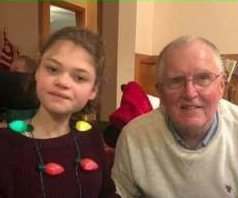
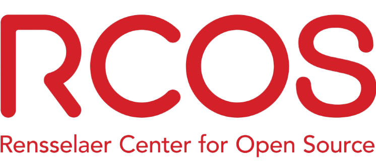

SponsorsWe would like to thank the sponsors below for helping us achieve our mission of inclusivity... Edward and Lynne Fennel in the name of Haley Elizabeth FennelRead more about their story at https://poppyandhaley.comHaley Fennel (left) and Ed 'Poppy' Fennell (right)© 2025 Rensselaer Polytechnic InstituteFunding from RCOS would not have been possible without Dr. TurnerWe are pursuing funding from IEEE provided through the HTB Event Sponsorship © 2025 IEEE